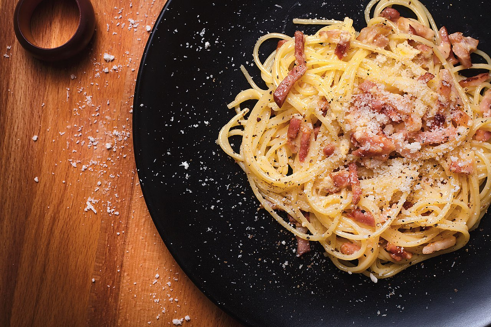

Home
Carbonara

Description
Carbonara is a classic Italian pasta dish known for its rich, creamy
texture and simple ingredients. Originating from Rome, it's made with egg
yolks, Pecorino Romano cheese, pancetta (or guanciale), and black pepper,
combined with pasta to create a flavorful dish. It's quick to prepare and
perfect for lovers of authentic Italian cuisine.
Ingredients
- 400g (14 oz) spaghetti or rigatoni (or pasta of your choice)
- 150g (5 oz) guanciale or pancetta (cut into small cubes)
- 3 large egg yolks
- 1 whole egg
- 60g (2 oz) Pecorino Romano cheese (grated)
- 60g (2 oz) Parmesan cheese (grated)
- Freshly ground black pepper
- Salt
Steps
Cook the pasta in a large pot of boiling salted water until al dente.
While the pasta is cooking, heat a large skillet over medium heat. Add the guanciale or pancetta and cook until it's crispy.
In a bowl, whisk together the egg yolks, whole egg, grated Pecorino Romano cheese, grated Parmesan cheese and black pepper.
Once the pasta is cooked, drain it and add it to the skillet with the guanciale or pancetta. Remove from heat.
Add the egg and cheese mixture to the pasta, stirring quickly to combine. The residual heat will cook the eggs, creating a creamy sauce.
Season with freshly ground black pepper and a generous pinch of salt.
Serve immediately, garnished with additional grated Pecorino Romano cheese and black pepper.
Top